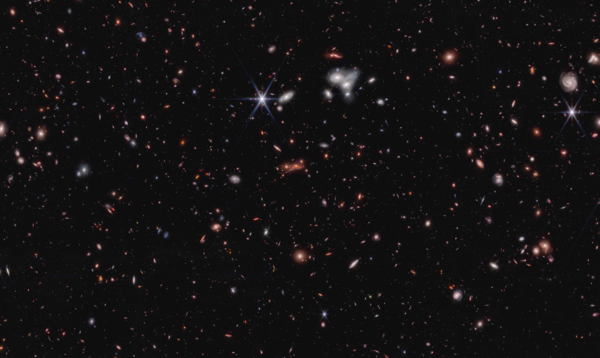
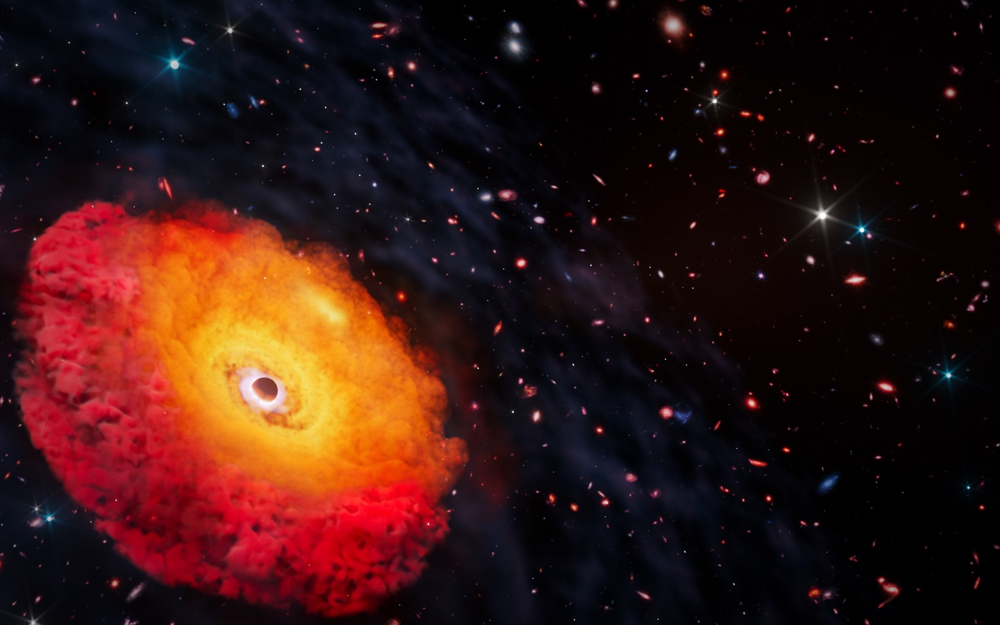
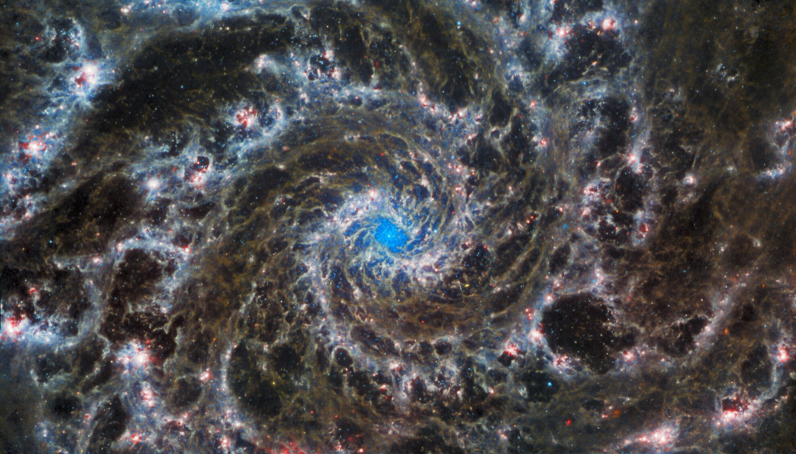
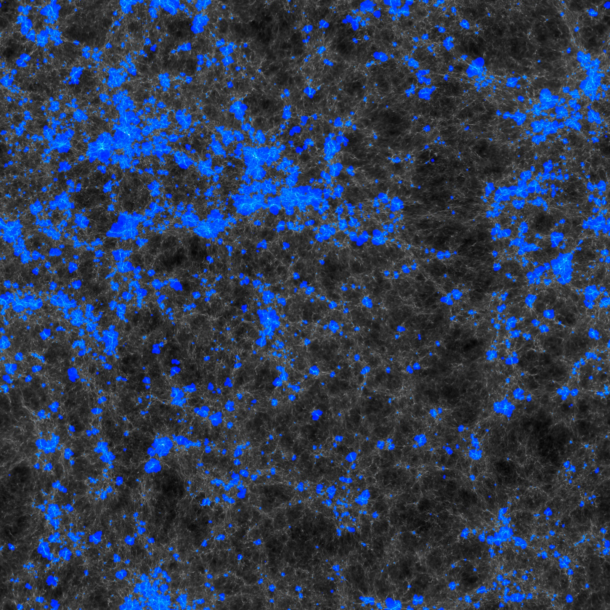

We seek to understand when and how galaxies first formed out of the cosmic dark ages — using JWST and Hubble in space and the largest telescopes on the ground, interpreted through collaborations with theorists around the world. Our work spans four connected themes.

Finding and characterizing galaxies seen just a few hundred million years after the Big Bang. Much of our work measures the rest-frame UV luminosity function at high redshift and confirms early galaxies spectroscopically — including some of the earliest galaxies known, such as Maisie's Galaxy — to test how quickly the first galaxies assembled.

JWST has revealed a surprising population of "little red dots" and the most distant active black holes yet found — including CAPERS-LRD-z9, the earliest confirmed black hole. We study how the first supermassive black holes were seeded and how they grow within their host galaxies in the first billion years.

How do galaxies build their mass and structure over cosmic time? We study the abundance of massive galaxies at early times and the physical properties of galaxies — star-formation histories, sizes, and morphologies — to connect the first galaxies to the mature systems we see today.

How did galaxies and accreting black holes reionize the intergalactic medium, ending the cosmic dark ages? We use Lyman-alpha emitting galaxies and measurements of the ionizing-photon escape fraction (fesc) — from HETDEX and our own surveys — to identify which sources lit up the universe.
Each release provides HST + JWST photometry in all filters, photometric redshifts and full P(z) distributions from Lazy.jl, and best-fit model fluxes — with an interactive search, sky viewer, and catalog downloads.
Catalog public in 2027Our science draws on the deepest JWST and Hubble surveys — several led or co-led by our group:
Meet the people behind the work →